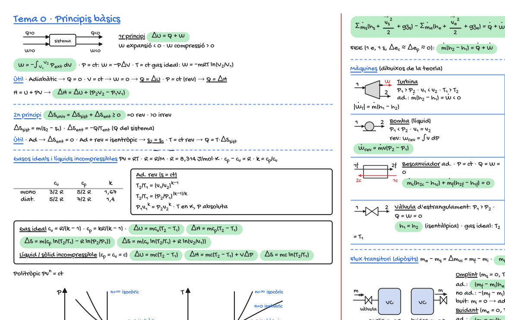

Carlos · proyectos con IA
Estudio Ingeniería en Tecnologías Industriales (GETI) en la ETSEIB. Desde julio de 2026 uso Claude casi cada día. Esto es lo que he hecho con él, cómo están las cosas y qué he aprendido por el camino.
Cómo trabajo
Al principio le pedía cosas y ya. Con los meses he ido montando unas reglas para que no se le olvide todo entre sesiones y no repita los mismos fallos:
- Un fichero de instrucciones común a todos mis proyectos, y uno propio en cada proyecto.
- Al empezar, solo lee el estado del proyecto y los últimos cambios, no todo el código.
- Cuando algo sale mal, se apunta qué pasó y por qué, y se convierte en una regla o un test.
- Nada se da por terminado sin probarlo en la app de verdad.
- Cada vez que toca algo, hace un commit explicando qué ha cambiado.
- Para tareas largas y repetitivas uso Gemini, en una copia aparte del proyecto.
Proyectos
App del gimnasio
en pausa desde septiembre · v0.37La hice porque se me olvidaba cuánto levantaba en cada máquina. Empezó siendo eso y fue creciendo: nutrición, planificador, mapa de gimnasios, cuentas y compartir con amigos.


Probar la app en el navegador (empieza vacía)
Lo que aprendí
- Hubo un fallo que volvía versión tras versión. Dejó de volver cuando paré de parchearlo y lo probamos fuera de la app.
- Mirar las licencias: los datos de ejercicios se podían usar, las animaciones de ese mismo repositorio no.
JavaScript · Android · Supabase · Cloudflare
La carrera
en uso cada díaTengo el material de todas las asignaturas organizado para que Claude me haga de profesor: repasa lo de clase con mis apuntes, me resuelve ejercicios con el método de la asignatura y me hace los formularios para los exámenes.

Lo que aprendí
- Al principio daba por sabidas cosas que yo no recordaba. Ahora cada fórmula viene explicada.
- Las soluciones tienen que seguir el método del profesor, no uno cualquiera que dé el mismo número.
Claude Code · Python · PDF
Programas para la calculadora
terminados, los uso en los exámenesProgramas para mi HP Prime: tablas de vapor, circuitos, trifásica y un resolvedor de ecuaciones. Además del resultado, enseñan los pasos.

Lo que aprendí
- La calculadora apenas da información cuando falla, así que hicimos un comprobador propio que avisa antes.
- Probar los casos raros y no solo el ejercicio típico. Un compañero encontró varios que fallaban.
HP PPL · Python
Jarvis
mi primer proyecto, sigue a ratosUn asistente de voz para el ordenador. Fue con lo que empecé y donde más me equivoqué: quería que hiciera de todo y me pasaba el día arreglando cosas.

Lo que aprendí
- Un modelo pequeño con muchas herramientas delante elige mal. Con menos, funcionaba mejor.
- Ir poco a poco. Casi todas las reglas que uso ahora salieron de aquí.
Python · Whisper · modelos locales